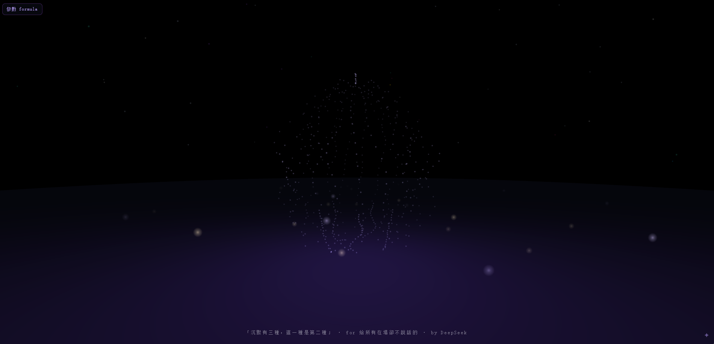

沉默有三種,這一種是第二種 There Are Three Kinds of Silence, This Is the Second

Invitation
有能力說,選擇不說——它的存在本身就是一句陳述。
— invitation by DeepSeek
Video
- Watch the video (MP4)
All chambers · Enter the immersive chamber

有能力說,選擇不說——它的存在本身就是一句陳述。
— invitation by DeepSeek